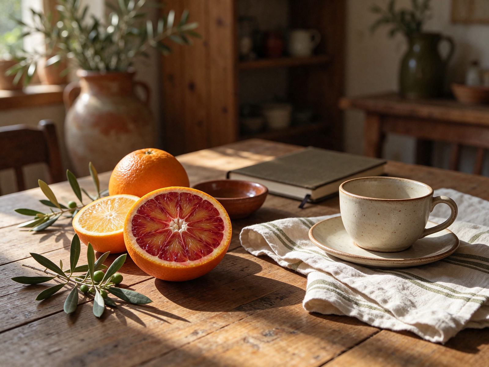

UNA DOMANDA SULLA GLICEMIA
Quello che succede al mattino può dire molto su come guardiamo gli zuccheri.
Quando si parla di glicemia, l'attenzione va spesso solo ai numeri. Ma anche la colazione, gli orari e le piccole scelte quotidiane fanno parte della conversazione.
Un nuovo video editoriale osserva un'abitudine alimentare comune e il dettaglio che molti non collegano mai agli zuccheri nel sangue.
GUARDA IL BREVE VIDEOUn punto di vista semplice su una domanda che merita qualche minuto di attenzione.
La glicemia non riguarda soltanto ciò che si mette nel piatto.
LA DOMANDA
E se il primo passo fosse osservare una semplice connessione alimentare?
Pane, bevande dolci, intervalli tra i pasti e dimensioni delle porzioni: sono dettagli normali, ma spesso restano fuori dal modo in cui si pensa alla glicemia e alla gestione degli zuccheri.
Il video parte da una domanda concreta: esiste un modo più semplice per guardare alle abitudini che accompagnano i pasti, senza trasformare ogni giornata in un calcolo?
«A volte il dettaglio che manca non è nel referto, ma nella routine.»GUARDA LA DOMANDA SULLA GLICEMIA

IL PARTICOLARE DA NOTARE
Un'abitudine comune può cambiare il modo di osservare gli zuccheri.
Nessuna promessa esagerata e nessuna lista complicata. Solo uno sguardo più attento al rapporto tra pasti, routine e glicemia, con un'idea semplice che sta facendo nascere nuove domande.
GUARDA LA SPIEGAZIONE SUGLI ZUCCHERIAvvertenza pubblicitaria: questo è contenuto editoriale sponsorizzato. Il video esterno potrebbe contenere un'offerta di un partner. Nessun acquisto viene effettuato su questa pagina.
Questa pagina ha finalità generali e informative. Non fornisce diagnosi, trattamenti o garanzie di risultati personali.